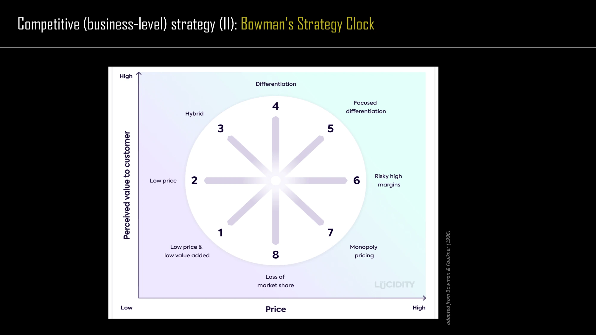

The framework
| Position | Price / value relationship | Meaning in the lecture |
|---|---|---|
| 1. Low price and low value added | Low price, low perceived value | A basic proposition; assess whether its limited value still fits a customer need. |
| 2. Low price | Lower price at a more standard value level | A price-led position that requires an economically viable delivery model. |
| 3. Hybrid | Relatively low price with higher value | A combination of differentiation and a competitive price. |
| 4. Differentiation | Higher perceived value | An offer whose distinctive value supports its competitive position. |
| 5. Focused differentiation | High value and high price | A premium position aimed at customers willing to pay for it. |
| 6–8. Vulnerable positions | Price rises without matching perceived value | The slide labels these risky high margins, monopoly pricing and loss of market share. |
Key distinctions
Perception matters
The vertical axis concerns customer-perceived value, not the producer's effort or technical complexity. A feature that customers do not recognize or care about does not automatically improve the position.
Use it alongside generic strategies
Porter's framework asks about advantage and scope. Bowman's clock emphasizes the relationship between price and perceived value. They are complementary ways to interrogate an offer, not interchangeable diagrams.
How to use it
- Choose a customer segment and a relevant comparison set.
- Assess the offer's relative price and perceived value.
- Explain the operational changes needed to move to the desired position.
Keep in mind
Positions are not permanent. The diagram simplifies perceptions and does not establish that a premium or hybrid proposition is profitable.
How is this different from simply ranking prices?
Reveal the explanation
It evaluates price in relation to perceived value.
Read the classroom original
Complete pages from the supplied lecture slides. Select a page to read, enlarge or browse its extracted text. Page numbers refer to the PDF’s physical page order.
